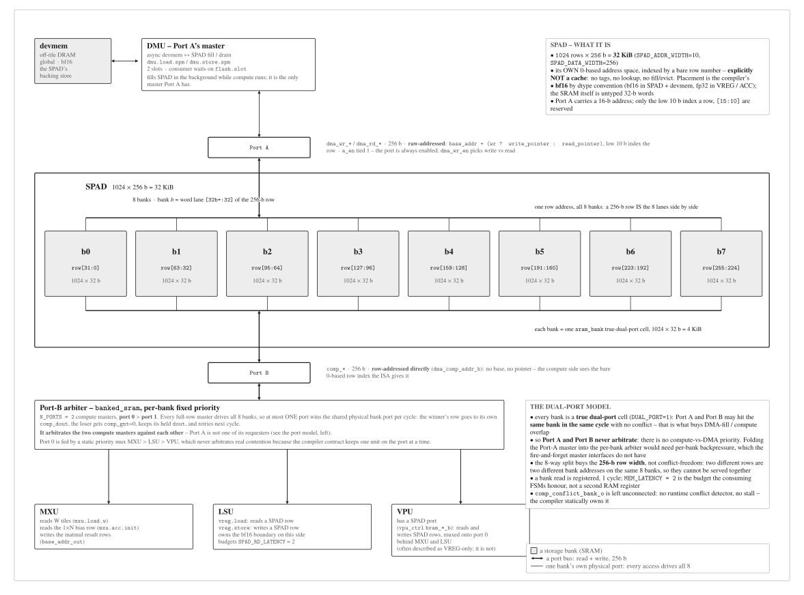

SPAD: the scratchpad operand tier¶
The SPAD (spad.sv) is the compute tile's on-chip scratchpad: bf16 operand memory
in a separate, 0-based address space (like CUDA .shared), sitting between off-tile device
memory and the fp32 compute-register tiers (VREG / ACC). It is the operand store the MXU
reads weights from and the LSU moves rows to and from; the DMU fills and drains it in bulk.
This page covers its role, geometry, ports and clients, the fixed-latency contract, and the
LSU --- the SPAD ↔ VREG mover that lives on the SPAD side of the boundary.
Role in the datapath¶
SPAD is the bf16 operand tier: weights and activations, plus the bf16 1D vectors
(gamma / beta / bias) before they are lifted into VREG. It is a separate on-chip address
space, not an fp32 view of shared SRAM. Its place in the spine (devmem → SPAD → VREG →
ACC) is drawn on the compute-tile overview (a1-tile-structure).
Geometry and storage¶
- Geometry: 32 KiB = 1024 × 256-bit rows, 8 banks (
bank = row mod 8), bf16 storage. - Each row is the full 256-bit compute bus (8 × 32-bit lanes). Numbers are SSOT-owned (
npu_config_pkg.sv, fromnpu/params.py).

Fig. A2. SPAD banking and port arbitration. 32 KiB over 8 banks (bank = row mod 8),
bf16. Port A is the DMU; Port B is the compute-side client. Compute clients are
fixed-latency and the DMU yields.
Note: the a2-spad-ports figure is as-built-grounded and still draws an MXU-to-SPAD result
writeback and a live VPU SPAD port; both are RTL-wiring artifacts, not the 0.5.0 datapath
(where the MXU drains to ACC and the VPU reaches SPAD only through the LSU). The prose on
this page follows the 0.5.0 model.
Ports and clients¶
SPAD is a true dual-port, single-clock scratchpad. Port A is the DMU; Port B
carries the compute clients. Under the 0.5.0 model the Port B clients are the LSU (which
owns all SPAD ↔ VREG traffic) and the MXU (weight and bias reads); the VPU is not a
Port B client --- it operates on VREG and ACC, and its SPAD-adjacent traffic is
LSU-mediated. Compute clients get a fixed access latency; the DMU absorbs arbitration
variability by yielding (it is async and flush.slot-gated), so compute never stalls on SPAD.
The as-built RTL additionally splits Port B into port0 (MXU / DMA / serialized VPU, high
priority) and port1 (a second, lower-priority VPU path that co-issues concurrently with
an in-flight MXU tile, #149); the 0.5.0 model above, routing all SPAD ↔ VREG traffic
through the LSU, supersedes this as-built VPU-on-Port-B wiring for this page's normative
narrative. This caveat is the single home for the port0/port1 VPU-co-issue fact that
dmu.md cross-references.
Access latency and the fixed-latency contract¶
Compute clients (MXU weight/bias reads, the LSU) get a fixed SPAD access latency
(MEM_LATENCY = 2 cycles → about 3 cycles per row, registered BRAM output); bank conflicts
among compute clients are compiler-avoided by static scheduling, exactly like VREG. The
end-to-end reservation offsets that enter the compiler's reservation table are owned by the
ISA timing contract; this page states only the per-access latency.
The LSU¶
The LSU (load/store unit) is the SPAD ↔ VREG mover: it owns the 0x3_ register
load/store ops --- acc.store (ACC → VREG, fp32), vreg.load (SPAD bf16 → VREG
fp32, widen), and vreg.store (VREG fp32 → SPAD bf16, narrow) --- and it owns the
bf16 ↔ fp32 casts on the SPAD side of the boundary. It is the mover, not the VPU: this
resolves the register-load/store ownership question the VPU page cross-refs.
One datapath serves all three ops identically. The fixed latency = ROWS +
SPAD_RD_LATENCY (8 + 2 = 10 cycles for a full tile-row op): a read is issued for
tile-row r on cycle r, and the corresponding write commits RL = SPAD_RD_LATENCY = 2
cycles later. The async ACC / VREG reads are pushed through an equal-depth (RL) shift
register so all three ops share the same, data-independent timing --- safe for the
scoreboard-free sequencer. The 8 + 2 = 10 value is symbolic/parametric (ROWS = N,
RL = MEM_LATENCY), not a hardcoded constant.
FIG. 14 --- LSU pipeline, stage/latency view: FIXED LATENCY = ROWS + SPAD_RD_LATENCY =
8 + 2 = 10; the three ops (acc.store, vreg.load, vreg.store) share one datapath,
read tile-row r on cycle r, write RL = 2 later, and own the bf16 ↔ fp32 casts.
open standalone
RTL realization¶
spad.sv wraps a common/banked_sram macro: 8-bank true dual-port, Port A (DMU) and
Port B (compute). Port B is presented as port0 (high priority) and port1 (a second,
lower-priority master) via the per-bank grant arbiter (comp_gnt / comp_conflict_bank_o);
a lower-priority master advances only on a granted cycle, which is the "compute fixed > DMU
yields" primitive. The tile module tree (h-module-tree) is on the
site map.
mininpu · SPAD · compute-tile overview · back to home